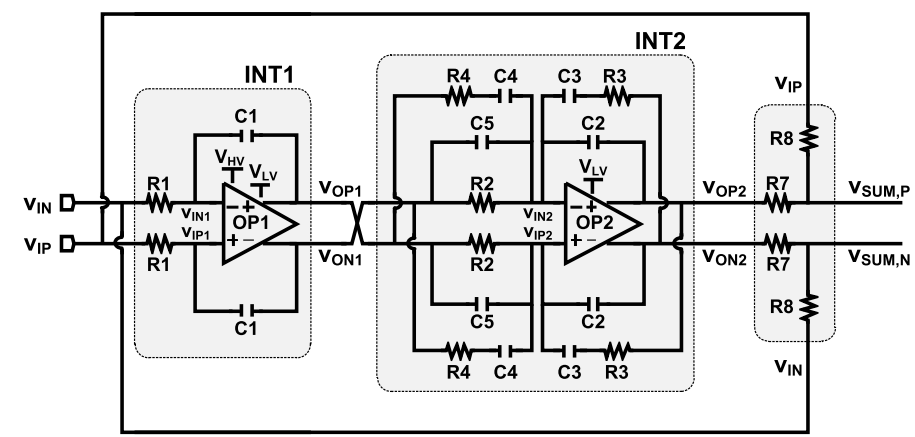

Overlay

Use this as a visual QA aid. Label size, font metrics, and hand-drawn wobble should be treated as low-priority differences; topology and pin alignment matter most.
Side by Side
Original: sch2tikz-out\2026-0626-2222-upload.png
Rendered: sch2tikz-out\2026-0626-2222_rendered.svg
Rendered: sch2tikz-out\2026-0626-2222_rendered.svg